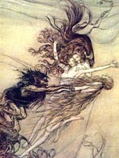

Цверги, в древньоісландській, німецькій та скандинавській міфології, істоти, подібні карликам, гномам, що живуть в глибоких печерах, природні духи.
Їх називали чорними Альва або дварфами, на противагу білим Альва-ельфів. Скандинавські легенди оповідають, що в незапам'ятні часи цверги були хробаками в тілі величезного велетня Имира, з якого був створений світ. В "Старшій Едді" говориться, що вони були створені з крові і кісток богатиря Бріміра, який, ймовірно, був тим же самим Іміром.
Цверги мешкали в землі і каменях, вони боялися сонячного світла, який перетворював їх в камінь, у володіння їм була віддана земля Нідавеллір. Ці істоти були дуже вправні в різних ремеслах, вони створювали чарівні вироби для богів: молот Мьелльнір, спис Гунгнир, золоте волосся Сів, намисто Брісінгамен, корабель Скідбладнір і інші магічні речі і обереги.
Із бджолиного меду і крові поета і мудреця квасір ці істоти створили священний мед поезії - їм боги мазали губи немовляті, якому судилося в майбутньому складати вірші.
Цверги - досвідчені майстри-ювеліри і ковалі, котрі володіли магічними знаннями і чарами.
Альвис - мудрий цверг, сватався до дочки бога Тора Праця і хитрістю Тора перетворений на камінь.
Андварі - творець магічного кільця сили і скарбів Нібелунгів з викраденого їм золота рейнських дев.
Двалін - викував спис Гунгнир, корабель Скідбладнір і золоті волосся для богині Сів.
Брокк і Ейтрі - творці вепра ґуллінбурсті із золотою щетиною для бога Фрейра.
Альфріг, Двалін, Берлінг, Грер - творці знаменитого чарівного намиста Брісінгамен.
Галар і Фьялар - виробники «меду поезії» з крові вбитого ними мудрого чоловічка квасір.
Сидр - викував молот Мьyoллнір і створив кільце Драупнір.
Цверги Аустрі, Вестрі, Нордрі, Судрі - підтримують небо по чотирьох сторонах світу (землі).